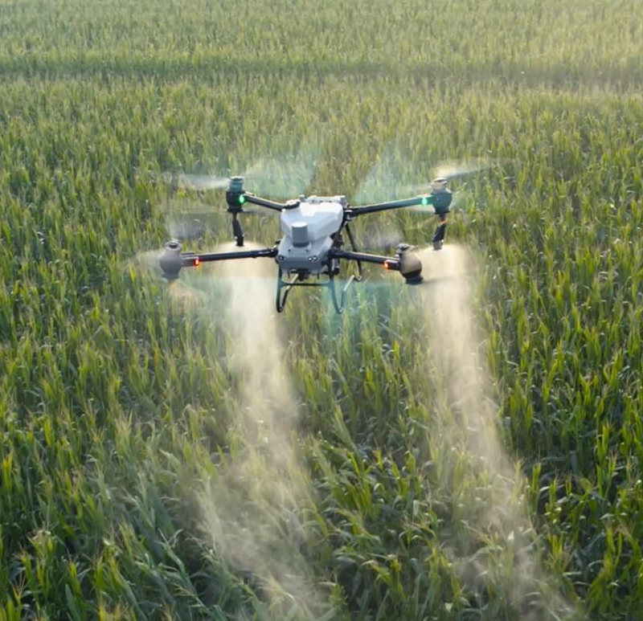
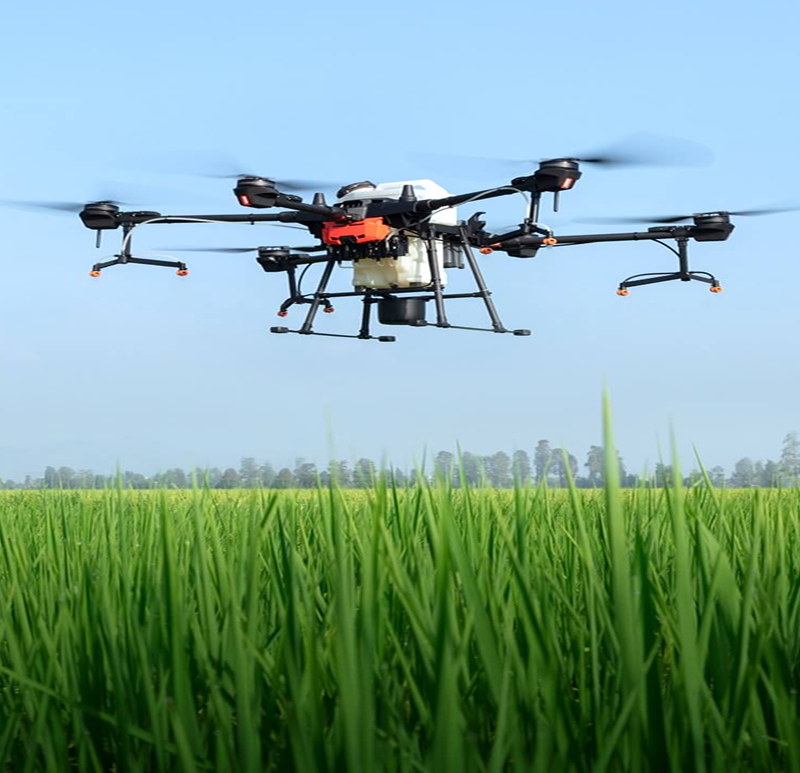

REPRESENTANTES OFICIALES DE AGROCHERY
La fuerza de
Agrochery
El respaldo de Solanum
HABLAR CON UN ASESOR¿Qué significa ser
representante de Agrochery?
Acompañamiento integral antes, durante y después de la compra

Asesoramiento
personalizado
Elección técnica según
tus necesidades
- Atención directa
- Evaluación de necesidades
- Configuración ideal
Logística
directa
Entregamos en
tu finca
- Traslado al terreno
- Entrega de lote
- Puesta en marcha
Respaldo
oficial
Garantía de
fábrica
- Asesoramiento autorizado
- Soporte local
- Cobertura de marca
Taller y
postventa
Mantenimiento
oficial
- Taller especializado
- Repuestos originales
- Asistencia técnica
Líneas de tractores Agrochery
Soluciones para distintas escalas y
necesidades productivas

Baja potencia
y viñateros
(Hasta 75 HP)
Unidades de 25 HP a 75 HP, compactas y ágiles. Ideales para economías regionales, frutales, viñedos, hortalizas y tareas operativas generales.

Mediana
potencia
(90 HP a 140 HP)
Tractores versátiles de 90 HP a 140 HP. El equilibrio ideal entre fuerza y economía para preparación de suelo, siembra, labranza y trabajos a campo abierto.

Alta
potencia
(160 HP a 260 HP)
Equipos pesados de 160 HP a 260 HP diseñados para grandes extensiones y alta exigencia. Máximo rendimiento de tracción, tecnología y confort operativo.
EL RESPALDO DE SOLANUM
Te acompañamos en cada
etapa de tu equipamiento
Evaluemos las características de tu producción
para encontrar el
tractor indicado.